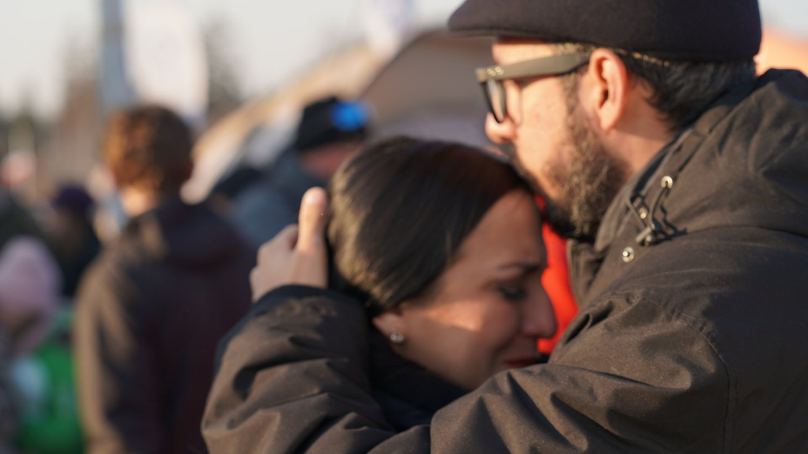
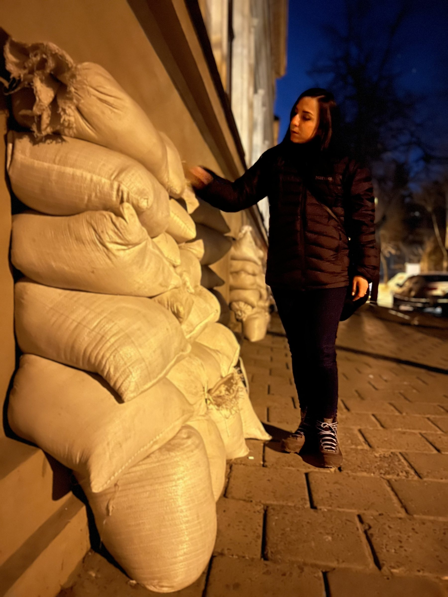
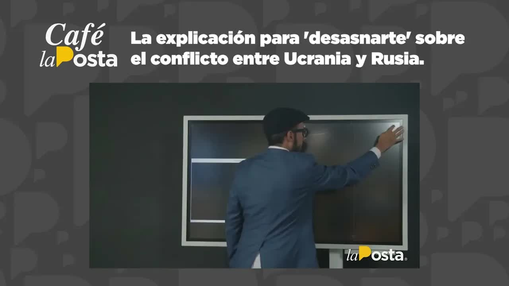
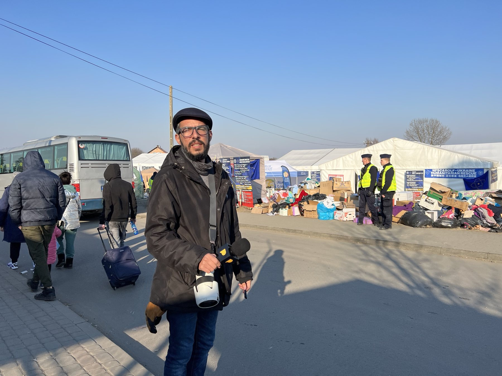

Podcast diario · La PostaDiario de un corresponsalDel 24 de febrero al 19 de agosto de 2022
La Posta · Febrero a agosto de 2022 · Cobertura de la invasión rusa
Ucrania, día a día
Rusia cruzó la frontera la madrugada del 24 de febrero de 2022 y La Posta abrió su cobertura ese mismo día. Lo que la sostuvo fue un podcast diario, Diario de un corresponsal, grabado primero desde Quito y después desde la frontera polaca y desde Lviv, donde fue el único medio ecuatoriano en territorio ucraniano. Según el propio equipo, llegó a ser el podcast más escuchado del país en esos días. Esta es la bitácora completa: el día uno con una estudiante ecuatoriana en Zaporiyia, el mapa del día ocho, la explicación del día doce, los siete días de viaje, el embajador de Estados Unidos a los cuarenta días, el viceministro de los vuelos de retorno y el balance a los seis meses.
Cobertura Andersson Boscán, Mónica Velásquez, Jefferson Sanguña, José María Gil y Hernando TapiaMedio La PostaPublicado Del 24 de febrero al 19 de agosto de 2022
24 feb 2022empieza la invasión
9entregas del diario
7 díasen Medyka y Lviv, en el terreno
716repatriados en tres vuelos
En cuatro frases
Vladimir Putin ordenó la invasión de Ucrania la madrugada del 24 de febrero de 2022. La primera noche fueron atacadas 17 ciudades.
La Posta cubrió la guerra en directo desde el primer día: mapas, explicadores, entrevistas con ecuatorianos atrapados, con el embajador de Estados Unidos y con el viceministro que organizó los vuelos de retorno.
En tres vuelos desde Hungría y Polonia, más un vuelo mexicano y vuelos comerciales, volvieron 730 personas según el viceministro Luis Vayas, que dirigió la operación desde Przemyśl, en Polonia.
A los seis meses la cobertura seguía. La guerra, también.
Capítulo 1
Diario de un corresponsal
La cobertura de Ucrania no se contó primero en el estudio: se contó en audio. Cada día, desde Quito y después desde la frontera polaca y desde Lviv, La Posta grababa un episodio de Diario de un corresponsal, el podcast que sostuvo la cobertura de la invasión. Según el propio equipo, llegó a ser el podcast más escuchado del país en esos días; el episodio del viaje se mantuvo una semana como el tercero más escuchado de Spotify en Ecuador. Boscán, Mónica Velásquez, José María Gil y Hernando Tapia viajaron a Medyka y a Lviv en la tercera semana de la guerra, los únicos periodistas ecuatorianos en territorio ucraniano; en Quito, Jefferson Sanguña coconducía los programas. Nueve entregas, del día uno al balance de los seis meses.
1:01El ingreso a Ucrania

La frontera: el abrazo de una mujer que acaba de cruzar
Diario de un corresponsal
La cobertura, episodio a episodio
Día 1Quito ↔ Zaporiyia
Empieza la invasión
Diana Vallejo, estudiante de medicina en Zaporiyia, cuenta el pánico, los trenes cerrados y los cajeros sin dinero. La Cancillería habla de 450 ecuatorianos.
La semana en el terreno: Medyka a siete grados bajo cero, 45.000 personas al día, Lviv con seis misiles y una escuela convertida en refugio. Este fue el episodio que más se escuchó.
Los audios originales todavía no están en este archivo: se enlazarán aquí, episodio por episodio, en cuanto se localicen las grabaciones. Mientras tanto, el programa de televisión de cada día queda a un clic.
La madrugada del 24 de febrero de 2022 Rusia cruzó la frontera. Vladimir Putin lo llamó operación militar especial y la primera noche fueron atacadas 17 ciudades. Café la Posta salió al aire ese mismo día con una estudiante ecuatoriana en Zaporiyia y con el análisis de lo que empezaba. Al día siguiente, el día dos, otra edición completa. El conteo de la Cancillería subió de 450 a 700 y a 913 ecuatorianos ubicados. Desde ahí, cada entrega del diario dejó por escrito lo que ese día se sabía; abajo está la bitácora, con el mapa que la Moni preparaba para cada emisión.
Bitácora
Día a día
Día 1
Empieza la invasión
A las cinco de la mañana, hora de Kiev, Putin anunció una operación militar especial. Misiles sobre 17 ciudades. Café la Posta, con Boscán y Jefferson Sanguña, salió al aire ese mismo día con Diana Vallejo, estudiante ecuatoriana de medicina en Zaporiyia y vocera de los estudiantes, que contó el pánico, las fronteras y trenes cerrados, los cajeros sin dinero y una Cancillería que "recién estaba gestionando": la recomendación era moverse al oeste, a Lviv. La Cancillería hablaba de 450 ecuatorianos identificados, el 85 por ciento estudiantes de 18 a 25 años. Y el análisis de lo que empezaba: el Donbás, donde Rusia tenía tropas desde hacía ocho años, y Crimea, anexada en 2014.
Otra edición completa, ya con Mónica Velásquez en el estudio: las columnas rusas bajando desde Bielorrusia hacia Kiev, un ecuatoriano en Kiev con cincuenta horas sin dormir y un edificio bombardeado a cinco calles, otro en Zaporiyia a quince horas de la frontera con veinte dólares en la billetera. Uno cree que lo único complicado es que caigan bombas, resumió Boscán. La Cancillería ya contaba 700 ecuatorianos en Ucrania. El canciller Juan Carlos Holguín anunció que Polonia recibiría a los ecuatorianos sin visa y que un contingente encabezado por el viceministro de Movilidad Humana viajaría a Varsovia; Boscán reconoció que se había portado a la altura en su primera crisis. Ecuador le vendía a Rusia 1.300 millones al año en flores, camarón y banano.
Boscán tomó el mapa. Jersón, la primera gran ciudad en caer, la noche anterior. Mariúpol, ocho días de combate y bombas de racimo denunciadas por la ONU. Combates en la zona de Chernóbil. El plan ruso: tomar Odesa y Mariúpol para dejar a Ucrania sin salida al mar. Al norte, un convoy de 60 kilómetros estancado por el barro y por las señales de tránsito que los ucranianos retiraron, la comida caducada y los tanques sin gasolina. Cuatro minutos y medio.
Llegaron a Quito los primeros pasajeros del vuelo humanitario. El viceministro Vayas contó después en Veraz los números de la operación: 246, 203 y 190 pasajeros en los tres vuelos, más 9 en un vuelo humanitario mexicano y 82 en vuelos comerciales coordinados por el Estado, 730 personas. El primer vuelo salió con asientos vacíos por las mascotas: solo cabían tres en cabina y cinco en bodega, y nadie aceptó dejar la suya en adopción. Unos 200 ecuatorianos decidieron quedarse en Europa.
Día 12
Para no hablar sin saber
Doce minutos con el mapa completo, que la Moni había preparado la víspera. Tres frentes y cuatro puntos clave: el sur desde Crimea hacia Jersón, Mariúpol y Odesa; el este con Járkov, la segunda ciudad, en ruinas; Kiev cercada por el norte; y la central nuclear de Zaporiyia, la mayor de Europa, escenario de los primeros combates en una planta nuclear. La tesis de Putin era un corredor que uniera el Donbás con Crimea y una herradura que aplastara a la resistencia contra las fronteras de Polonia, Rumania y Moldavia. Medio millón de personas atrapadas en Mariúpol sin luz, agua ni calefacción a cuatro grados bajo cero. Trece días después, la resistencia seguía en pie en cuatro de las cinco grandes ciudades. Ese mismo día, en Café la Posta, Mara Villacís, estudiante que salió de Kiev en un tren de doce horas y se quedó en Lviv repartiendo comida en la estación, contó por qué no volvía y acusó a la Cancillería de anunciar trenes que eran del sistema ucraniano; le preocupaban siete compañeros atrapados en un búnker en Sumy.
Cuatro personas de La Posta, Boscán, Velásquez, José María Gil y Hernando Tapia, viajaron a la frontera polaco-ucraniana y cruzaron a Lviv: siete días de cobertura, el único medio ecuatoriano en territorio ucraniano. La primera noche en Medyka, a siete grados bajo cero, por donde pasaban 45.000 personas al día tras esperar hasta 37 horas a la intemperie; Gil se quedó ahí de voluntario. En Lviv, una ciudad de 700.000 habitantes que llegó a 1,4 millones en tres semanas y sobre la que cayeron seis misiles esos días, dormidos en la sala de una casa con tres hermanos que habían salido de Irpin, una escuela en un subsuelo convertida en refugio para dos mil personas, un ecuatoriano con diez años en el país dispuesto a defenderlo, un hombre de casi setenta años que sacó a su familia y volvió a patrullar, jóvenes recogiendo botas y municiones, un legionario polaco rumbo al frente. El podcast del viaje fue durante una semana el tercero más escuchado de Spotify en Ecuador. Los reportajes se recopilaron en el programa del día 40.
Michael Fitzpatrick, embajador de Estados Unidos en Ecuador, abrió felicitando a La Posta por el esfuerzo en Ucrania y se sentó a responder si la guerra estaba por acabarse. Putin ya fracasó, dijo: no está ganando esta guerra, pero puede ganar la batalla; sus tres objetivos, someter a Ucrania, dividir a la OTAN y afirmar el poder ruso, habían fallado. La pregunta era cuánto duraría la destrucción. Los rusos acababan de retirarse de los alrededores de Kiev, se contaban más de 410 cuerpos y el mundo empezaba a ver Bucha: gente con las manos atadas y una bala en la cabeza, un crimen de guerra.
Veraz, el programa de Carlos Vera en La Posta, recibió a Luis Vayas, entonces viceministro de Movilidad Humana. Dos semanas antes de la invasión ya gestionaba con Polonia, Hungría, Eslovaquia y Rumania la entrada de ecuatorianos sin visa; Ecuador no tiene embajada en Ucrania y el cónsul en Viena fue enviado a Kiev. La noche del 23 de febrero abrió una videollamada con 600 personas que duró toda la noche. Desde Przemyśl, alojado en casa de una pareja de polacos mayores que se ofendió cuando quiso pagarles, dirigió con 18 funcionarios en Polonia y unos 120 en total la salida: el avión de la FAE no servía, 50 plazas y quince escalas, y se fletó un charter. Emitió 213 pasaportes, el 23 por ciento, porque las empresas que vendían paquetes de estudio los retenían; lo denunció a la Fiscalía como posible estafa. Buscó a siete estudiantes que un convoy de 34 buses se llevó a Alemania gritando sus nombres en un campo de refugiados. Vera dedicó el programa a Jan Topic, el empresario ecuatoriano que había ido a combatir.
Medio año de guerra. Ese 19 de agosto Boscán no estaba en el estudio: comparecía ante la Comisión de Fiscalización por el caso Danubio y las aduanas. Luis Eduardo y Doménica Vivanco cerraron el programa con Ruslan Spirin, representante de Ucrania para Latinoamérica, conectado desde Kiev: 8,5 millones de ucranianos habían salido del país y 5,5 millones ya habían vuelto; Rusia, que planeó tomar Ucrania en tres o cuatro días, había perdido 44.000 soldados, 2.000 tanques y 400 aviones y helicópteros según Kiev; la central de Zaporiyia seguía ocupada y minada, seis reactores, diez veces el peligro de Chernóbil. Pidió no llamarlo conflicto: esa es una guerra. Después dejamos de hablar de lo que estaba pasando, dijo Doménica al presentarlo, pero la guerra allá continúa.
El 3 de marzo, día ocho, Andersson Boscán mapeó el territorio en cuatro minutos y medio: Jersón había caído la noche anterior, Mariúpol llevaba ocho días de combates, el objetivo ruso era Odesa y la salida al mar. El 7 de marzo publicó la explicación completa, doce minutos para entender de dónde venía la guerra: el Donbás con presencia militar rusa desde 2014, Crimea anexada ese mismo año, el corredor que Putin buscaba entre ambos y la herradura con la que quería aplastar a la resistencia contra las fronteras occidentales. Trece días después, como contaba Boscán, cuatro de las cinco grandes ciudades seguían resistiendo con una logística rusa deficiente y una moral ucraniana que Occidente no había visto venir.
0:37Dentro del refugio antibombas

Lviv, con los sacos de arena contra las paredes

Día 12 · El explicador
La explicación para entender el conflicto entre Ucrania y Rusia
Volodímir ZelenskiVolodímir Zelenski resistió en Kiev cuando los analistas daban por caída la capital. Contexto de la explicación del 7 de marzo de 2022.Foto: http://www.president.gov.ua/ · CC BY 4.0 · Wikimedia Commons
Mientras tanto, la Cancillería sacaba gente. Los vuelos humanitarios salieron de Budapest y Polonia en marzo: 246, 203 y 190 pasajeros según el viceministro Vayas, más 9 en un vuelo humanitario mexicano y 82 en vuelos comerciales coordinados por el Estado, 730 personas llegadas a Ecuador; unos 200 ecuatorianos decidieron quedarse en Europa. El 4 de abril, a los cuarenta días, el embajador de Estados Unidos Michael Fitzpatrick vino a Café la Posta: Putin ya fracasó, pero puede ganar la batalla. El 18 de abril, Vayas contó en Veraz cómo se organizó la evacuación.
730personas llegadas a Ecuador, según el viceministro Vayas
≈ 200ecuatorianos decidieron quedarse en Europa
Capítulo 3
Cómo siguió
A los seis meses, el 19 de agosto de 2022, la cobertura hizo su balance con Ruslan Spirin, representante de Ucrania para Latinoamérica, desde Kiev: 8,5 millones habían salido del país, 5,5 millones habían vuelto, la central de Zaporiyia seguía ocupada. Boscán no condujo ese día: comparecía en la Asamblea por el caso Danubio. Los estudiantes que volvieron en los vuelos humanitarios denunciaron que las becas prometidas para continuar sus carreras nunca se concretaron; Vayas había dicho en abril que la Senescyt y las universidades de Hungría y Polonia les conseguirían cupos. La guerra sigue. Jersón fue liberada en noviembre de 2022; Mariúpol sigue ocupada.
0:16Una refugiada cruza con sus perros y una maleta
0:32Las sirenas: qué se hace cuando suenanLa videollamada con una de sus hijas, desde la cobertura

El campo de refugiados
En junio de 2023 Boscán cerró un programa con una autocrítica del gremio: periodistas que cobran por publicar y por callar, que piden favores al poder, que tratan al público como imbécil y no bajan a la calle. Yo soy periodista, así que te debo una disculpa, dijo. La cobertura de Ucrania había sido lo contrario: bajar al terreno antes de opinar.
Bitácora abierta
La guerra continúa
Repatriados en tres vuelos (cifra oficial)716 personas; 730 llegados en total, según Vayas
Ecuatorianos que se quedaron en Europa≈ 200
Becas prometidas a estudiantesSin cumplir
JersónLiberada en noviembre de 2022
Mariúpol y el DonbásOcupados
Última actualización de esta bitácora5 de septiembre de 2026
Actualizado el 5 de septiembre de 2026
Lo que falta
Preguntas sin responder
Cuántos ecuatorianos siguen en Ucrania
Qué pasó con las becas prometidas a los estudiantes repatriados
Cuántos de los 716 volvieron a Europa después de la guerra
Qué hizo la Fiscalía con la denuncia de la Cancillería contra las empresas que vendían estudios en Ucrania y retenían pasaportes
Cronología
Paso a paso
24 feb 2022
Invasión
Café la Posta sale al aire con una estudiante ecuatoriana en Zaporiyia. 450 ecuatorianos identificados.
25 feb 2022
Día dos
700 ecuatorianos. Holguín anuncia la ruta sin visa por Polonia.
3 mar 2022
El mapa
Jersón cae. Boscán mapea el avance.
4 mar 2022
Primer vuelo
246 pasajeros llegan a Quito, con asientos vacíos por las mascotas.
7 mar 2022
El explicador
Doce minutos para entender la guerra. Mara Villacís, desde Lviv.
9-16 mar 2022
El viaje
Cuatro de La Posta en Medyka y Lviv. El único medio ecuatoriano en Ucrania.
Mar 2022
Tres vuelos
730 personas llegadas, según Vayas. Unos 200 se quedan en Europa.
4 abr 2022
El embajador
Fitzpatrick: Putin ya fracasó, pero puede ganar la batalla.
18 abr 2022
Diplomacia en guerra
Luis Vayas en Veraz.
19 ago 2022
Seis meses
Balance con Ruslan Spirin desde Kiev.
Los nombres
Quién es quién
AB
La Posta
Andersson Boscán
Cobertura desde Quito y desde Medyka y Lviv, marzo de 2022.
MV
La Posta
Mónica Velásquez
Cobertura desde Quito y desde el terreno; preparó los mapas del explicador.
JS
La Posta
Jefferson Sanguña
Coconductor de los programas de la cobertura.
JM
La Posta
José María Gil y Hernando Tapia
Parte del equipo que viajó a Ucrania; Gil se quedó de voluntario en Medyka.
MF
Entrevistado el 4 de abril de 2022
Michael Fitzpatrick
Embajador de Estados Unidos en Ecuador.
LV
Entrevistado en Veraz
Luis Vayas
Viceministro de Movilidad Humana durante la evacuación; ascendido después a viceministro de Relaciones Exteriores.
RS
Entrevistado
Ruslan Spirin
Representante de Ucrania para Latinoamérica; conectado desde Kiev a los seis meses.
DV
Entrevistadas
Diana Vallejo y Mara Villacís
Estudiantes ecuatorianas en Zaporiyia y Lviv, las voces del día uno y del día doce.
Boscán y La Moni frente a una manifestación por UcraniaMaterial de la investigaciónLa Moni entrevista en el paso fronterizoMaterial de la investigaciónLa planificación de la coberturaMaterial de la investigación
La Moni en Lviv, de nocheMaterial de la investigación
Lo que se dijo al aire
Las transcripciones
Café la Posta La guerra de Rusia vs. Ucrania
24/02/2022 · 14.583 palabras
mal estás preparado para empezar tu carrera porque sabes que para cumplir tus objetivos y superar tus retos necesitas ser un profesional estás listo para asumir tu futuro porque solo la perfección que se alcanza con sacrificios logrará tu desarrollo en ecotec te damos las mejores herramientas para que logres tus metas y estés a la altura de las oportunidades porque esta carrera la ganas tu pregunta por nuestro sistem…
Café la Posta: Rusia vs. Ucrania: el día 2 de la guerra
25/02/2022 · 10.809 palabras
objetivos y superar tus retos necesitas ser un profesional estás listo para asumir tu futuro porque solo la perfección que se alcanza con sacrificios logrará tu desarrollo te damos las mejores herramientas para que logres tus metas y estés a la altura de las oportunidades porque esta carrera la ganas tú pregunta por nuestro sistema de pensión diferenciada Buenos días bienvenidos todos Cómo están bienvenidos yo soy An…
Así se encuentra Ucrania en el octavo día de la invasión rusa
3 de marzo de 2022 · 696 palabras
el mapa de Ucrania Este es el octavo día de que empezar la invasión rusa octavo día de Invasión rusa y más o menos Esto es lo que ya está sucediendo Esa es la región del Don vas donde inicia el conflicto en realidad aquí se encuentran lugar y dónde que son las dos repúblicas desde declaran República independientes las dos los dos espacios territoriales Ucrania que Rusia reconoce como República independiente y donde e…
Café la Posta: ¿UNES quiere la cabeza de Llori? Paola Cabezas y la ecuatoriana que ayuda en Ucrania
07/03/2022 · 11.400 palabras
sistema de tensión diferenciada buenos días sábados bienvenidos como están yo soy anderson buscan esperando mi café agraciado hoy es lunes 7 de marzo del año del señor 2022 jefferson sanguña de las manivelas que es nos mira desde algún lugar diferente de anderson amigas y amigos de la posta como estan tengan todos ustedes muy buenos dias tremendo frío que amaneció hoy si nota que yo pero horrible saben una llovizna y…
La explicación para entender el conflicto entre Ucrania y Rusia
7 de marzo de 2022 · 1.724 palabras
buses a la ciudad de mariupol para lograr la salida por fin de 400.000 civiles que están atrapados desde hace 10 días en una ciudad que ya no tiene electricidad que no tiene internet que no tiene agua y que no tiene calefacción con temperaturas de menos 1 - 2 - 3 y menos 4 grados diez días sin servicios básicos sin calefacción a punta de bombas en medio pollo porque porque esta es la salida de ucrania amarga son dos …
Café la Posta: Michael Fitzpatrick, el embajador de EEUU: 40 días de Rusia vs. Ucrania
04/04/2022 · 10.134 palabras
actualidad nacional hoy es lunes 4 abril del año del señor 2022 agradecimiento especial los que se conecten díaz la señal de la posta a los que hacen posible que nos encontremos aquí cada mañana y por supuesto un saludo especial para mónica velásquez y expresión sandwich que se encuentran ya en estudios anderson money amigas y amigos de la posta como están tengan todos ustedes muy buenos días muchísimas gracias por e…
febrero en europa pues con las horas de diferencia la conexión con los ciudadanos ecuatorianos que estaban en ucrania como usted bien señala habíamos registrado bueno hasta el último dato que teníamos justo ahora y lo que éste señala 903 ecuatorianos y habíamos mapeado ucrania o en las diferentes ciudades y con diferentes números de ecuatorianos en cada una de ellas y teníamos coordinadores debería mencionar coordina…
Café la Posta: 6 meses de Ucrania vs. Rusia y chao a los ad honorem
19/08/2022 · 10.197 palabras
redes podemos seguir la conversación te quiero más a los que comparten que a los que no comparten más bienvenidos a esta nueva edición de café la posta por supuesto me acompañen los jefes amos señores dueños de este espacio la señora doménica vivanco y el señor jefferson sanguña siempre guapos como siempre leidos amigas y amigos de la apuesta como están bienvenidos a un nuevo programa de café la posta señorita muchas…
Nosotros, los periodistas, también tenemos la culpa
28/06/2023 · 647 palabras
discrepamos la culpa es nuestra porque un impresentable como Sebastián Corral que es ministro dueño de un canal y contratista del estado todo el mismo tiempo Sigue estando invitado a las fiestas de periodismo y no nos da ni un poquito de vergüenza la culpa es nuestra porque los periodistas en este país nos metimos a boxear por la libertad de expresión y luego nos quedó el gustito de ponernos los guantes en lugar de b…
Transcripciones de los subtítulos automáticos de cada programa. No están corregidas a mano: sirven para buscar una frase y llegar al minuto exacto del video, no como cita textual literal.
Después
Qué pasó después
2022 en adelante
Una guerra que sigue
Jersón fue liberada en noviembre de 2022. Mariúpol y el Donbás siguen ocupados.
2022
Las becas que no llegaron
Los estudiantes repatriados denunciaron que el Gobierno no cumplió los cupos que Vayas anunció en abril de 2022.
Los episodios del podcast Diario de un corresponsal se listan a partir de la bitácora publicada por La Posta entre febrero y agosto de 2022; los audios originales se enlazarán cuando estén disponibles. Que llegó a ser el podcast más escuchado del país en esos días es lo que sostiene el propio equipo; el dato verificable es el tercer puesto de Spotify Ecuador durante una semana. Las piezas grabadas en el terreno están recopiladas dentro del programa del día 40, alojado en este sitio; se separarán cuando se localicen los archivos originales.